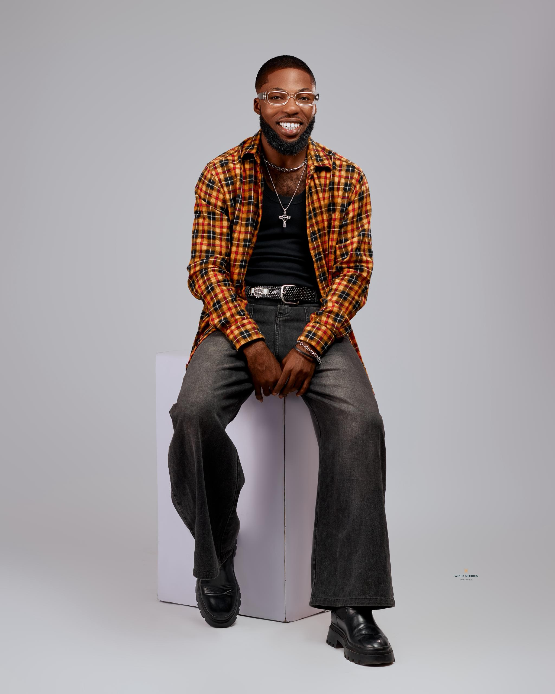

Biography
Samuel Kwesi Bekoe (Massive C.Boy The Gospel Giant)
Gospel Dancer Minister | Choreographer | Director | Videographer | Editor | Dance Creator | Beat Producer | Co-founder, Afro Steps Academy | President, MDL – Massive Dance Lab
About Me
Samuel Kwesi Bekoe, professionally known as Massive C.Boy "The Gospel Giant", was born on 24th February 2002 at the Korle Bu Teaching Hospital, Accra, Ghana.
He was raised in Sampa Valley, Greater Accra Region. He is the son of Madam Vida Ocran and Mr. Joe Wayllam Bekoe, and the elder brother to Jeremiah Kwesi Bekoe.
Samuel had his basic education at Steps to Christ Preparatory School and completed at Epinal Preparatory School. He continued to Tema Secondary School in the Greater Accra Region, where he completed in 2017.
After a four-year break, he resumed his tertiary education and in 2025 gained admission to the University of Education, Winneba, where he studied Bachelor of Arts in Theatre Arts.
My Journey
Massive C.boy started dancing officially in 2017. For 6 years, he struggled with a major decision between secular dance and gospel ministry.
In 2021, he had the opportunity to work with one of Africa’s finest dancers, Amofa Michael, popularly known as “Incredible Zigi” the very person he had looked up to since childhood. What began as a childhood dream soon became a defining moment.
However, in the midst of this breakthrough, God called him to dedicate his gift fully to Him. After months of prayer and sleepless nights, on 13th July 2022, Samuel made the decision to commit his talent to ministry. (Matthew 28:18-20)
In 2022, God answered his prayer for a sign. He was given the opportunity to travel to Cameroon and Nigeria with The Great NET and “The Throne Ministers (TTM)” as the Main Dance Instructor. It was during this trip that he fully understood that dance is not just movement it is worship.
Creative Works & Leadership
By the grace of God, Massive C.boy is the Co-founder of Afro Steps Academy, established in 2020, and the President of (MDL) Massive Dance Lab*. He is also the pioneer of the “MDL University Tour“ the first of its kind in Ghana’s gospel space.
He is credited with creating several dance movements that have blessed churches and audiences across the country:
- Zanzama Dance Step – 8th December 2020
- See Dance Step – April 2023
- Blessings Dance Step – 9th May 2024
Achievements & Ministry Impact
Samuel and his team made history as the first gospel dance group to perform at the Praise Achievement Awards on 18th December 2023, and the first gospel dance ministry to minister at the Telecel Ghana Music Awards (TGMA) alongside “Big Jhoe” and other ministers.
He has had the privilege of working with renowned gospel artists including Scott Evans, Joe Mettle, Kingzkid, Kobby Salm, Rosey Musiq, Set Diamond, Mister Pryz, Neqta, and more.
In 2026, he served as the Lead Choreographer for Piesie Esther’s TGMA performance.
In 2025, he launched personal projects under MDL.
In 2026, he officially launched the "MDL University Tour", reaching 10 universities so far with the message of excellence in gospel dance.
Mission & Philosophy
Samuel’s mission is to use dance to win souls, disciple young people, and raise a generation of excellent gospel dancers for Christ. (Matthew 28:18-20)
"He is called the 'Gospel Giant' because he believes that gospel is not just music it’s a lifestyle."